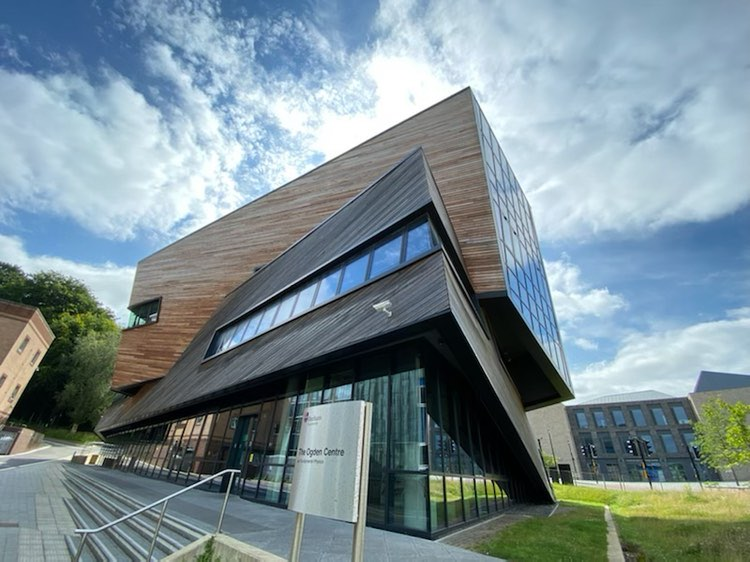
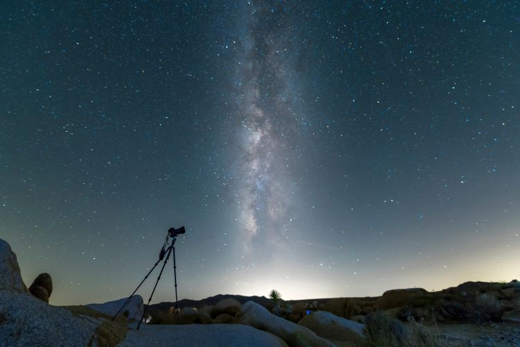
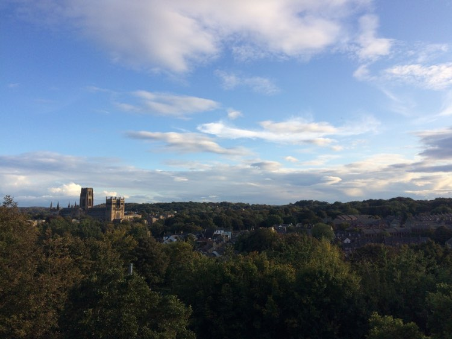

Research

I have conducted many research projects throughout my undergraduate degree, focusing primarily on AGN.
In the summer of 2021, I undertook a Summer Studentship at Durham University investigating 'The Wind-jet Connection & Accretion Disk Modelling in Active Galactic Nuclei' supervised by Dr. Leah Morabito and Prof. Chris Done. For this project, I studied both radio-quiet and radio-loud AGN from the recent LOFAR-Chandra Bootes field data. The relationship between radio loudness and column density was investigated and the qsosed accretion disk model was validated. Python was extensively used in this project to analyse and visualise data. I participated actively in weekly meetings of the Durham QSO Group, presenting my research progress, receiving feedback and asking questions, and giving a talk on my research results at the end of the project. I produced a detailed project report that summarised my method and findings so that the work could be expanded upon in the future.
During the third year of my degree, I completed my python project, 'Spinning Black Holes and the Temperature of their Accretion Disks' supervised by Dr. Nigel Metcalfe. I simulated black holes, investigating how the spin of a black hole changes the inner radius of its accretion disk, how the spectra produced using Newtonian Approximation and General Relativity equations of accretion disk temperature are different and how the spin and temperature equation used changes the efficiency of the black hole. I was awarded the runner-up prize for best computing project poster (determined by quality of research and aesthetics).
For my masters project, I am currently working on investigating 'The Disk-jet Connection & Data Mining SDSS using Neural Networks' supervised by Dr. Leah Morabito and Dr. Simone Scaringi. I am currently building and training a neural network, using Python, Tensorflow and Google Keras, to find black hole masses and Eddington ratios from observed Mgii lines in SDSS spectra. I will then use these new black hole masses, along with multiwavelength data, to fit accretion disk models to estimate accretion rate. How the accretion disk is related to the radio jets of relativistic plasma is a major open question that I will investigate with this project.
Photo of the Ogden Centre for Fundamental Physics at Durham University taken by AWestoby July 2021.
Observing

My first astronomical observing experience was at Senior Space School UK in 2019. I used the 20-inch telescope at the University of Leicester's Observatory to view Jupiter and its moons and I was inspired to pursue a career in Astrophysics. I recently, in the summer of 2022, bought my own amateur astronomy telescope and was able to view the rings of saturn!
During the third year of my degree, I gained valuable observing experience using the telescopes on the roof of the Durham University physics building to observe the positions of the Trojan asteroids over a period of two months. For my astrolab project, supervised by Prof. Mark Swinbank and Prof. Alastair Edge, I calculated the orbits of the asteroids from the observations. Five targets were studied: Eurybates and Orus, which are targets for the NASA Lucy mission (the first mission to the Trojan Asteroids), and Agamemnon, Hektor and Diomedes in addition. I also achieved the secondary aim to make a prediction for the positions of the Lucy targets for at the time of the missions arrival.
Outreach

I am an advocate for gender equality in Physics. In 2021, I mentored three year 12 Physics A-level students as part of the Improving Gender Balance programme run by the Institute of Physics. I provided feedback on activities they completed on the Brightside web platform and supported them by answering their queries about studying and university.
I currently volunteer as an Ecliptic Newsletter Content Writer for UKSEDS. I research, write and create graphics for the monthly newsletter which keeps the society members up to date about news, events and oppurtunities in the space sector.
In my spare time, I am a leader for UK Scouting. I am a Section Assistant at a local Cub Scout group (aged 8-10) and was previously a Young Leader at a Beaver Scout Group (aged 5-8). I help the Cubs/Beavers accomplish badges and I lead activities and games. As part of my science outreach in my local community, I ran the Astronomy badge for the Cubs and the Space Activity badge for the Beavers, teaching about planets and constellations and inspiring the next generation.
Photo of Durham Cathedral taken by BWestoby October 2020.
CV
Here is a pdf copy of my Curriculum Vitae, last updated Nov 2022.